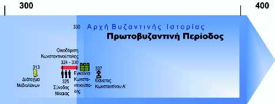

Εισαγωγή: Το Βυζάντιο γεννιέται
Το Βυζάντιο, η αυτοκρατορία που κληρονόμησε τη Ρώμη στην Ανατολή, συνδέται άρρηκτα με το έργο ενός μεγάλου Ρωμαίου αυτοκράτορα: του Κωνσταντίνου Α'. Για να ανορθώσει το κλονισμένο κράτος, πήρε σημαντικά μέτρα, θέτοντας τις βάσεις για μια νέα εποχή.
Όροι-κλειδιά της ενότητας:
- Ίδρυση Κωνσταντινούπολης
- Χρυσό νόμισμα
- Χριστόγραμμα
- Διάταγμα των Μεδιολάνων
- Οικουμενική σύνοδος της Νίκαιας
Η Ίδρυση της Κωνσταντινούπολης: Η Νέα Ρώμη
Από τη Ρώμη στη Νέα Ρώμη: Ένα Στρατηγικό Ταξίδι
Μετά τη νίκη του επί του Λικίνιου το 324 μ.Χ., ο Κωνσταντίνος αποφάσισε να ιδρύσει ένα νέο διοικητικό κέντρο. Η επιλογή του έπεσε στο αρχαίο Βυζάντιο, μια πόλη με μοναδική γεωπολιτική θέση στο σταυροδρόμι Ασίας και Ευρώπης, Ευξείνου Πόντου και Μεσογείου, με μεγάλη εμπορική σημασία.
Κάντε κλικ στα σημαδάκια του χάρτη για να δείτε πληροφορίες για τη Ρώμη και την Κωνσταντινούπολη.
Γιατί μια Νέα Πρωτεύουσα; Οι λόγοι του Κωνσταντίνου:
Σε αντίθεση με τη Δύση, η Ανατολή διέθετε ακμαίο πληθυσμό και οικονομία, καθιστώντας την ιδανική για ένα νέο κέντρο.
Οι Χριστιανοί, στους οποίους ο Κωνσταντίνος στηρίχτηκε πολιτικά, ήταν πολυπληθέστεροι στην Ανατολή.
Οι μεγάλες πόλεις της Ανατολής υπέφεραν από θρησκευτικές συγκρούσεις, κάτι που ο Κωνσταντίνος ήθελε να αποφύγει στη νέα του πρωτεύουσα.
Από το Βυζάντιο, οι αυτοκρατορικές δυνάμεις μπορούσαν να αποκρούσουν ευκολότερα τους Γότθους (στο Δούναβη) και τους Πέρσες (στον Ευφράτη).
Η οικοδόμηση της Κωνσταντινούπολης:
Ο Κωνσταντίνος ανοικοδόμησε το Βυζάντιο σύμφωνα με το ρυμοτομικό σχέδιο της Ρώμης, προικίζοντάς την με νέα τείχη, επιβλητικές λεωφόρους, το φόρουμ του Κωνσταντίνου, το Ιερόν Παλάτιον, το κτίριο της Συγκλήτου και άλλα δημόσια κτίρια όπως εκκλησίες, λουτρά και δεξαμενές.
Στις 11 Μαΐου 330 μ.Χ. ολοκληρώθηκε η πρώτη φάση των εργασιών και τελέστηκαν τα εγκαίνια της πόλης, η οποία έλαβε το όνομα του ιδρυτή της, Κωνσταντινούπολη. Μέσα σε δύο αιώνους, η Νέα Ρώμη ξεπέρασε σε πληθυσμό και σημασία την Παλαιά Ρώμη.
Η Θρησκευτική Πολιτική του Κωνσταντίνου
Οι οπαδοί του Χριστιανισμού αποτελούσαν τη δυναμικότερη πληθυσμιακή ομάδα της Ανατολής και η νέα αυτή θρησκεία φαινόταν ότι μπορούσε να αποκαταστήσει την κλονισμένη ενότητα του Ρωμαϊκού Κράτους. Για αυτόν τον λόγο, ο Κωνσταντίνος έδειξε ευνοϊκή στάση προς τον Χριστιανισμό.
Σημαντικές Στιγμές στη Θρησκευτική Πολιτική:
Κάντε κλικ στα έτη για περισσότερες πληροφορίες.
Η Θρησκευτική Στάση του Κωνσταντίνου: Τι Λένε οι Πηγές;
Από το Σχολικό Βιβλίο
Ο Κωνσταντίνος έδειξε ευνοϊκή στάση προς τον Χριστιανισμό. Μετά τη νίκη του επί του Μαξεντίου (312), μετέφερε το μονόγραμμα του Χριστού (Χριστόγραμμα) από τη στρατιωτική σημαία στα νομίσματα του και εξέδωσε νόμους ευνοϊκούς για τους Χριστιανούς. Το Διάταγμα των Μεδιολάνων (313) αναγνώρισε στους Χριστιανούς ελευθερία άσκησης της λατρείας τους. Η Κωνσταντινούπολη βαθμιαία απέκτησε χαρακτηριστικά χριστιανικής πόλης.
Από τον A. A. Vasiliev (Ιστορία της Βυζαντινής Αυτοκρατορίας)
Ο Κωνσταντίνος Α' [...] έγινε Χριστιανός μόλις το χρόνο που πέθανε. Κατά τη διάρκεια της ζωής του παρέμεινε Ανώτατος Αρχιερέας (ανώτατος αξιωματούχος της ρωμαϊκής θρησκείας) και χρησιμοποιούσε τις εκφράσεις Ημέρα του Ήλιου και Ανίκητος Ήλιos, που, την περίοδο αυτή, συνήθως εννοούσαν τον θεό των Περσών, τον Μίθρα, του οποίου η λατρεία είχε διαδοθεί σε όλη την αυτοκρατορία [...].
Δοκίμασε τις γνώσεις σου!
Κουίζ Πολλαπλών Επιλογών
1. Ποιος ήταν ο κύριος λόγος που ο Κωνσταντίνος επέλεξε το Βυζάντιο ως νέα πρωτεύουσα;
2. Τι ήταν το Διάταγμα των Μεδιολάνων (313 μ.Χ.);
3. Ποιο κτίσμα της Κωνσταντινούπολης θύμιζε τη σχέση της με τη Ρώμη και ποιο το χριστιανικό της χαρακτήρα;
4. Ποιο σύμβολο μετέφερε ο Κωνσταντίνος από τη στρατιωτική σημαία στα νομίσματά του μετά τη νίκη επί του Μαξεντίου;
5. Πότε τελέστηκαν τα εγκαίνια της Κωνσταντινούπολης;
Άσκηση Σωστού/Λάθους
1. Ο Κωνσταντίνος Α' έγινε Χριστιανός στην αρχή της βασιλείας του, αμέσως μετά την ανάληψη της εξουσίας.
2. Η Α' Οικουμενική Σύνοδος της Νίκαιας συγκλήθηκε με σκοπό την ειρήνευση της Εκκλησίας και της αυτοκρατορίας.
3. Η Κωνσταντινούπολη, μέσα σε δύο αιώνες, ξεπέρασε το πληθυσμό της Παλαιάς Ρώμης.
4. Ο Κωνσταντίνος διατήρησε τον τίτλο του Ανώτατου Αρχιερέα (Pontifex Maximus) μέχρι το τέλος της ζωή του.
5. Η Ανατολή διέθετε ακμαίο πληθυσμό και οικονομία, γεγονός που συνέβαλε στην απόφαση του Κωνσταντίνου να ιδρύσει νέα πρωτεύουσα εκεί.
Περίληψη Ενότητας
Η ΜΕΤΕΞΕΛΙΞΗ ΤΟΥ ΡΩΜΑΪΚΟΥ ΚΡΑΤΟΥΣ: 1. Από τη Ρώμη στη Νέα Ρώμη
Μέτρα που έλαβε ο Κωνσταντίνος Α’ για την ανόρθωση του Ρωμαϊκού Κράτους:
- Ίδρυσε την Κωνσταντινούπολη (324-330). Μετέφερε το κέντρο (την πρωτεύουσα) της Ρωμαϊκής Αυτοκρατορίας από τη Δύση στην Ανατολή. Η επιλογή της συγκεκριμένης θέσης (αρχαίο Βυζάντιο) οφειλόταν στη γεωπολιτική της σημασία και στην εμπορική της σπουδαιότητα.
- Έδωσε το δικαίωμα στους Χριστιανούς να λατρεύουν το Θεό τους.
- Ξεχώρισε την πολιτική από τη στρατιωτική εξουσία.
- Έθεσε σε κυκλοφορία ένα χρυσό νόμισμα («χρύσινος», «solidus»).
Οι κυριότεροι λόγοι της ίδρυσης της Κωνσταντινούπολης:
- Η Ανατολή παρείχε ισχυρή οικονομία και ακμαίο πληθυσμό.
- Οι Χριστιανοί —σ' αυτούς στηρίχτηκε πολιτικά ο Κωνσταντίνος Α'— ήταν πολυπληθέστεροι στην Ανατολή.
- Στις πόλεις της Ανατολής υπήρχαν θρησκευτικές συγκρούσεις.
- Η απόκρουση των Γότθων (στο Δούναβη) και των Πέρσων (στον Ευφράτη) ήταν από αυτή τη θέση ευκολότερη.
Η Κωνσταντινούπολη (τα εγκαίνια της έγιναν στις 11 Μαΐου του 330) χτίστηκε με βάση το ρυμοτομικό σχέδιο της Ρώμης. Περιελάμβανε: τείχη, λεωφόρους, πλατεία (forum), έργα τέχνης, το Ιερόν Παλάτιον, το κτίριο της Συγκλήτου, δεξαμενές, λουτρά, εκκλησίες. Ο πληθυσμός αναπτύχθηκε ραγδαία. Στις αρχές του 5ου αι. αριθμούσε 150.000 κατοίκους. Στα μέσα του 6ου αι. αριθμούσε 300.000 κατοίκους.
Θρησκευτική πολιτική: Ο Κωνσταντίνος ευνόησε τους Χριστιανούς γιατί πίστευε ότι ο Χριστιανισμός θα ξανάφερνε την ενότητα στο Ρωμαϊκό Κράτος.
Μέτρα υπέρ των Χριστιανών:
- Μεταφέρει το Χριστόγραμμα από το λάβαρο στα νομίσματα (312).
- Προχωρά σε νομοθετικές ρυθμίσεις.
- Με το Διάταγμα των Μεδιολάνων (313), εξισώνει τους Χριστιανούς με τους πιστούς των άλλων θρησκειών.
- Παύει τους διωγμούς κατά των Χριστιανών (από το 324).
- Με την Α' Οικουμενική Σύνοδο της Νίκαιας (325) καταδικάζει τις αιρέσεις και επαναφέρει την ειρήνη στην Εκκλησία και την Αυτοκρατορία.
Επιπλέον Πληροφορίες (μόνο για ανάγνωση)
- Ο Φλάβιος Βαλέριος Κωνσταντίνος (Flavius Valerius Constantinus) ή Μέγας Κωνσταντίνος ή άγιος και ισαπόστολος Κωνσταντίνος (κατά την Ορθόδοξη Εκκλησία) ήταν γιος του Ρωμαίου Καίσαρα Κωνστάντιο Α΄ Χλωρός (Aurelius Valerius Constantius) και της Ελένης (μετέπειτα αγία Ελένη, η Ισαπόστολος), κόρης ξενοδόχου. Ο Κωνστάντιος ήταν μάλλον ταπεινής καταγωγής και η Ελένη κόρη κάποιου πανδοχέα από το Δρέπανο της Βιθυνίας.
- Το διάταγμα των Μεδιολάνων: Το Φεβρουάριο του 313 μ.Χ., ο μέγας Κωνσταντίνος συνάντησε στα Μεδιόλανα της Ιταλίας (σημερινό Μιλάνο) τον Αύγουστο Λικίνιο. Κατά τη συνάντηση αυτή ελήφθησαν αποφάσεις για την κοινή πολιτική στα θρησκευτικά θέματα. Κάτι τέτοιο ήταν απαραίτητο για να επέλθει η εσωτερική ειρήνευση στη Ρωμαϊκή Αυτοκρατορία, ύστερα από αιώνων διωγμούς για τις θρησκευτικές πεποιθήσεις. Σύμφωνα με τις αποφάσεις των Μεδιολάνων, κατοχυρώθηκε η ανεξιθρησκία και η θρησκευτική ελευθερία. Ιδιαίτερη αναφορά έγινε για τον Χριστιανισμό, ο οποίος γινόταν θρησκεία επιτρεπτή και νόμιμη για τους Ρωμαίους πολίτες και οι χριστιανοί ελεύθεροι μπορούσαν να ασκήσουν τα θρησκευτικά τους καθήκοντα. Όμως, ο Χριστιανισμός δεν αναγνωριζόταν ως επίσημη και προστατευόμενη θρησκεία της αυτοκρατορίας.